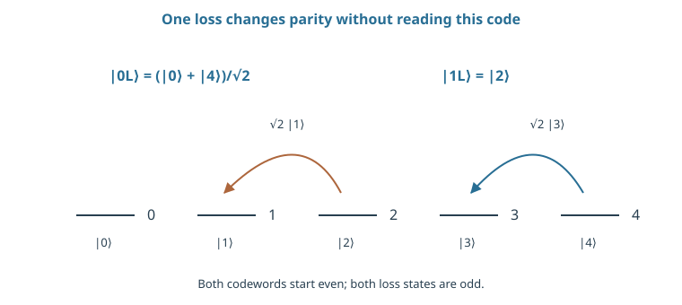
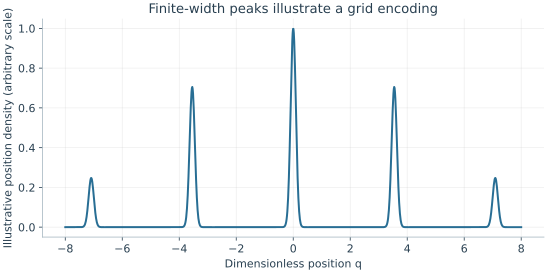

Starting point: Chapters 1–13; physical concepts and approximations are introduced as needed.
Anchor example: One photon loss on a binomial oscillator encoding, distinguished by parity without reading the logical amplitudes.
This lesson includes explanations, worked examples, and problems with solutions. Advanced results whose proofs are outside the chapter are identified explicitly.
A dual-rail photon loses its qubit when the photon is lost, and a transmon or an ion keeps only the lowest two levels of an oscillator-like ladder. An oscillator, however, has infinitely many levels. Instead of selecting two of them, can we spread a qubit across many levels so that the most common error, the loss of one excitation, leaves a recognizable trace without revealing the stored information?
We first ask what photon numbers a coherent state contains. Then we build a two-state code inside one mode and check what a single loss does to it, which gives an error signal, a syndrome. Comparing with cat states shows that the same parity measurement can be either a syndrome or a logical readout, depending on the encoding. Asking about small shifts instead of losses leads to grid codes. Finally we ask how parity is measured with an auxiliary qubit, and why storing more energy in the mode both helps and hurts.
Our first question is what a coherent state looks like in the number basis.
14.1 Oscillator States
We already describe an oscillator by its number states, its lowering operator, and its coherent states. How should a qubit be placed in that larger space? Counting the photon numbers in a coherent state shows how its energy is spread. Choosing two states whose single-loss images stay orthogonal then gives an encoding in which a loss can be detected and undone.
14.1.1 Number states and coherent states
What photon numbers does a coherent state contain? We met coherent states as the states a push creates from the ground state, with \(a\ket\alpha=\alpha\ket\alpha\). Write \(\ket\alpha=\sum_nc_n\ket n\). Since \(a\ket n=\sqrt n\ket{n-1}\), the eigenvalue equation gives \(c_{n+1}=\alpha c_n/\sqrt{n+1}\). Iterating and normalizing recovers \(\ket\alpha=e^{-|\alpha|^2/2}\sum_n\alpha^n\ket n/\sqrt{n!}\).
The probability of \(n\) photons is therefore \(e^{-|\alpha|^2}|\alpha|^{2n}/n!\), a Poisson distribution with mean \(|\alpha|^2\). A coherent state thus spreads its energy over many levels. The mode can be a microwave cavity field or a vibration of trapped ions. A bosonic encoding is a way of using such a mode, not a separate kind of particle.
14.1.2 Encoding within a mode
How can a code inside one mode survive the loss of an excitation? Try the illustrative binomial pair \(\ket{0_L}=(\ket0+\ket4)/\sqrt2\) and \(\ket{1_L}=\ket2\). Each has mean occupation two. One loss gives \(a\ket{0_L}=\sqrt2\ket3\) and \(a\ket{1_L}=\sqrt2\ket1\).
What does a loss do to a superposition? It sends \(u\ket{0_L}+v\ket{1_L}\) to \(\sqrt2(u\ket3+v\ket1)\). The same factor multiplies both logical amplitudes, so \(u\) and \(v\) survive intact. The two error states are also orthogonal to each other and to the code states. So a measurement can tell whether a loss occurred without learning \(u\) or \(v\), and a unitary can then send \(\ket3\) back to \(\ket{0_L}\) and \(\ket1\) back to \(\ket{1_L}\). A measurement result that reveals which error occurred, but not the encoded information, is called a syndrome.
Is that full protection? Not yet. A single loss event is called a jump. Between jumps the state still changes, because not losing a photon is itself information: it makes higher-number components slightly less likely. This no-jump evolution, double losses, and imperfect recovery must also be analysed before the code can be said to correct errors.
Problem 14.1. What does one loss do to \(\ket4\)?
Worked solution
The unnormalized result is \(2\ket3\). Conditioned on a detected loss, the normalized state is \(\ket3\); the factor influences the event probability.
14.2 Protected Information
A syndrome must reveal the error and hide the logical value. Does a given measurement, such as photon-number parity, do that for every code? Comparing cat states with the binomial code shows that it does not. Asking which errors are most common for a mode then leads to a different code, built to detect small shifts in phase space.
14.2.1 Cat states and parity
What symmetry do superpositions of opposite coherent states have? Expand \(\ket\alpha\pm\ket{-\alpha}\) in number states. The coefficient of \(n\) is proportional to \(\alpha^n[1\pm(-1)^n]\). So the plus combination contains only even \(n\) and the minus combination only odd \(n\). These are called cat states. A loss lowers \(n\) by one and flips the parity.
Is parity then a syndrome? If the even and odd cats are themselves the logical zero and one, measuring parity reveals the logical value and destroys a superposition. In the binomial code, both logical states start even and both single-loss states are odd. There, parity reveals the error and not the logical value. So a measurement is a syndrome only relative to a specified encoding. Preparing and controlling either code needs nonlinear operations, since an ideal oscillator evolving freely cannot make them.
14.2.2 Grid-state encodings
Which small error is most common for a mode, apart from loss? A small shift of its position or momentum, that is, a small displacement in phase space. Can a code make small shifts detectable? Use dimensionless coordinates \(q=(a+a^\dagger)/\sqrt2\) and \(p=-i(a-a^\dagger)/\sqrt2\), which satisfy \([q,p]=i\).
Place the logical states on a grid. An ideal grid zero state has sharp peaks at \(q=2k\sqrt\pi\) for every integer \(k\), and logical one shifts those peaks by \(\sqrt\pi\). This is the GKP code, after Gottesman, Kitaev, and Preskill. Measuring \(q\) modulo \(\sqrt\pi\) reveals a small shift, while leaving unresolved whether the peaks sit at even or odd multiples, which is the logical value.
Which shifts can be corrected? If \(|\delta q|<\sqrt\pi/2\), rounding to the nearest grid point identifies the correction in the ideal model. A larger shift can be mistaken for the other logical value. Protecting \(q\) alone does not protect an arbitrary qubit, so momentum needs a matching modular check. Infinitely sharp, infinitely extended grids cannot be normalized; their total probability is infinite. Real codewords have finite peaks and a finite envelope, hence finite energy and a nonzero logical error. We quote the conditions for correcting both shifts at once from the GKP theory; they are not proved here.

The drawn arrows describe the lowering operator acting on the codewords, not deterministic recovery. Both logical alternatives have mean occupation two. No-jump evolution and higher-order errors still require analysis.

The schematic density uses even multiples of √π, finite peak width, and a finite envelope. It is not an ideal infinite-energy codeword and does not by itself show the required momentum protection.
Problem 14.2. Why can parity measurement damage a superposition of an even and an odd cat?
Worked solution
The two logical alternatives have different parities. Measuring parity distinguishes them and removes their coherence instead of revealing only an error syndrome.
14.3 Control and Recovery
A syndrome is useful only if we can measure it and then act on it. How is photon-number parity measured, and how much energy should a code store? A qubit whose frequency depends on the photon number turns parity into a phase, which a measurement of that qubit reads. Counting losses per unit time then shows that more energy improves separation but increases exposure.
14.3.1 Auxiliary-mediated operations
How can parity be measured without counting photons? Couple the mode to an auxiliary qubit through \(H=\hbar\chi nZ_a/2\), so the qubit's frequency depends on the photon number \(n\). Prepare the auxiliary in \(\ket+\). On number state \(n\), a time \(t\) gives the auxiliary a relative phase \(e^{i\chi nt}\). At \(\chi t=\pi\) this is \((-1)^n\): even \(n\) leaves \(\ket+\) and odd \(n\) gives \(\ket-\). Each number state also gains a known phase, which must be tracked or compensated.
So an X-basis measurement of the auxiliary reads the parity. Whether this preserves the logical qubit depends on the encoding, as the cat and binomial codes showed. The auxiliary also brings errors of its own. If it relaxes during the interaction, it shifts the mode's phase by an amount that depends on when it relaxed. Recovery must therefore be evaluated as a physical circuit, not as a perfect projection.
14.3.2 Finite energy and error channels
How often does a code with mean occupation \(\langle n\rangle\) lose a photon? Suppose each excitation is lost independently at the constant rate \(\kappa\). A number state with \(n\) excitations then loses one in a short time \(dt\) with probability \(n\kappa\,dt\). Averaging over the state gives \(p_{\rm loss}\simeq\kappa\langle n\rangle t\) while this stays small. A larger mean occupation separates the codewords further in phase space, but it raises this exposure.
For the binomial code's mean of two, \(\kappa=100\) s⁻¹ and \(t=10\) μs give a single-loss probability of 0.002. Double losses, the finite speed of parity checks, and auxiliary faults then decide how often the single-loss model fails. The test of a bosonic code is whether the corrected logical information outlives the best unencoded state of the same hardware over a full cycle.
Problem 14.3. For \(\kappa=100\) s⁻¹, mean occupation 4, and \(t=10\) μs, estimate loss probability.
Worked solution
The short-time estimate is 100 × 4 × 10⁻⁵ = 0.004. Its validity requires this probability to be small.
Bosonic codes build redundancy into the levels of one oscillator. Could the physical states of a material instead be arranged so that no local disturbance can reach the stored information at all?
Worked model check. Apply one loss to u|0L〉+v|1L〉 in the binomial encoding. Why can parity reveal the loss without revealing u or v?
Worked solution
The result is \(\sqrt2(u\ket3+v\ket1)\). Both error states are odd, both code states are even, and the amplitudes have the same multiplicative factor. Full recovery still needs the no-jump and multiple-loss analysis.
These exercises draw on the whole chapter. Attempt each question before opening a hint, explain your reasoning, then compare it with the worked solution.
For a coherent state with \(|\alpha|^2=4\), find the probability of zero photons and of exactly four photons. What are the mean and standard deviation of the photon number?
Hint 1
Poisson: \(P_n=e^{-|\alpha|^2}|\alpha|^{2n}/n!\).
Hint 2
Variance equals the mean.
Worked solution
\(P_0=e^{-4}\approx0.018\) and \(P_4=e^{-4}4^4/24\approx0.195\). The mean is \(4\) and the standard deviation \(2\). A coherent state spreads over many number states; it is not a state of definite energy.
With loss rate \(\kappa=1000\ \mathrm{s^{-1}}\) per excitation, estimate the first-order loss probability during \(10\) μs for a mode with \(\langle n\rangle=2\), and for a bare Fock qubit \(\{\ket0,\ket1\}\) holding \(\ket+\) (\(\langle n\rangle=\frac12\)).
Hint 1
\(p_{\rm loss}\approx\kappa\langle n\rangle t\).
Hint 2
\(\kappa t=0.01\).
Worked solution
\(\kappa t=0.01\), so the encoded mode loses an excitation with probability about \(0.02\), and the bare qubit about \(0.005\). The encoding is four times more exposed to loss. It pays off only if its correction removes single losses faster and more reliably than they accumulate.
For the even cat \(\ket\alpha+\ket{-\alpha}\) with \(|\alpha|^2=4\), find the overlap \(|\braket{\alpha}{-\alpha}|^2=e^{-4|\alpha|^2}\) and explain what a single photon loss does to its parity.
Hint 1
\(\braket{\alpha}{-\alpha}=e^{-2|\alpha|^2}\).
Hint 2
\(a\ket{\pm\alpha}=\pm\alpha\ket{\pm\alpha}\).
Worked solution
\(\braket\alpha{-\alpha}=e^{-8}\approx3.4\times10^{-4}\), so the squared overlap is about \(10^{-7}\): the two components are nearly orthogonal. A loss maps \(\ket\alpha+\ket{-\alpha}\) to \(\alpha(\ket\alpha-\ket{-\alpha})\), the odd cat: parity flips from even to odd while the coherent components themselves are unchanged.
Apply two photon losses to the binomial code \(\ket{0_L}=(\ket0+\ket4)/\sqrt2\), \(\ket{1_L}=\ket2\). (a) Compute \(a^2\ket{0_L}\) and \(a^2\ket{1_L}\). (b) What does parity report after two losses? (c) Show that the resulting state looks like a valid code state but with distorted amplitudes, and explain why this is a logical error.
(a) \(a^2\ket{0_L}=\sqrt{12}\ket2/\sqrt2=\sqrt6\ket2\) and \(a^2\ket{1_L}=\sqrt2\ket0\). (b) Parity is even again, the same as no loss. (c) The state \(u\sqrt6\ket2+v\sqrt2\ket0\) lies in the even sector, but \(\ket2\) is \(\ket{1_L}\) and \(\ket0\) alone is not a codeword: the logical information has been scrambled while every syndrome reports “no error.” The code corrects single losses only; two-loss events within one correction interval cause logical errors, at a rate of order \((\kappa\langle n\rangle t)^2\).
For a grid code, a random displacement \(\delta q\) is Gaussian with standard deviation \(\sigma\). Correction fails when \(|\delta q|>\sqrt\pi/2\approx0.886\). (a) Using \(P_{\rm fail}=\mathrm{erfc}\big(0.886/(\sigma\sqrt2)\big)\), evaluate it for \(\sigma=0.3\) and \(\sigma=0.5\). (b) Why does the failure fall so steeply with \(\sigma\)? (c) What else must be protected?
(a) \(\sigma=0.3\): about \(0.003\). \(\sigma=0.5\): about \(0.076\). (b) Failure requires a displacement more than about \(3\sigma\) or \(1.8\sigma\), and Gaussian tails decay like \(e^{-x^2/2\sigma^2}\), so modest reductions in noise give large improvements. (c) The same analysis must hold for momentum shifts, since protecting \(q\) alone leaves phase errors; finite-energy codewords also have intrinsic peak widths that contribute to \(\sigma\).
Parity is measured with \(H=\hbar\chi nZ_a/2\), \(\chi/2\pi=1\) MHz. (a) How long does the parity mapping take? (b) During it, estimate the oscillator loss probability for \(\kappa=1000\ \mathrm{s^{-1}}\), \(\langle n\rangle=2\), and the auxiliary decay probability for \(T_1=50\) μs. (c) Which dominates, and why does it matter?
Hint 1
Mapping at \(\chi t=\pi\).
Hint 2
Decay probability about \(t/T_1\).
Worked solution
(a) \(t=\pi/\chi=1/(2\times1\ \text{MHz})=500\) ns. (b) Oscillator loss: \(1000\times2\times5\times10^{-7}=10^{-3}\). Auxiliary decay: \(0.5/50=10^{-2}\). (c) The auxiliary decay is ten times more likely. A decay during the mapping can produce a wrong parity result and, through the dispersive interaction, a random phase on the oscillator. Faulty syndrome measurements can thus introduce errors faster than the code removes them, unless the auxiliary is protected or the measurement is made fault tolerant.
Cat-state codes trade separation against loss. (a) Find the smallest \(|\alpha|^2\) for which \(|\braket{\alpha}{-\alpha}|=e^{-2|\alpha|^2}\le10^{-3}\). (b) By what factor does the loss rate \(\kappa|\alpha|^2\) exceed that of a mode with \(|\alpha|^2=1\)? (c) Why does a larger cat suppress one type of error while enhancing another?
Hint 1
\(2|\alpha|^2\ge\ln1000\approx6.9\).
Hint 2
Loss rate is proportional to the mean photon number.
Worked solution
(a) \(|\alpha|^2\ge\ln(1000)/2\approx3.45\). (b) The loss rate is \(3.45\) times that of \(|\alpha|^2=1\). (c) Separating \(\ket\alpha\) and \(\ket{-\alpha}\) in phase space suppresses errors that confuse them (exponentially in \(|\alpha|^2\)), while each additional photon increases the rate of loss events that change parity (linearly). Biased-noise cat qubits exploit this asymmetry, relying on another code layer to correct the remaining error type.
A student argues: “Each photon loss flips parity, so parity checks detect losses and the code is safe.” Using the binomial code, explain which numbers of losses a single parity check detects, and what happens if checks are too infrequent.
Hint 1
Parity reports the number of losses modulo two.
Hint 2
Two losses within one interval restore the original parity.
Worked solution
A parity check reports the number of losses modulo two. One loss (or any odd number) is detected; two losses (or any even number) give the same parity as no loss and pass undetected, while scrambling the logical state as the worked problem shows. Checks must therefore be frequent enough that the probability of two losses between checks, about \((\kappa\langle n\rangle t)^2/2\), is below the target error, and the check itself must not add more errors than it removes.
Compare an uncorrected Fock qubit with the binomial code over a correction interval with \(\kappa t=10^{-3}\). (a) Estimate the bare qubit’s loss probability for a typical state with \(\langle n\rangle=\frac12\). (b) For the code, failure requires two losses: estimate \((\kappa\langle n\rangle t)^2/2\) with \(\langle n\rangle=2\). (c) If each recovery step fails with probability \(\epsilon_r\), what break-even condition must \(\epsilon_r\) meet?
(a) About \(5\times10^{-4}\). (b) About \(2\times10^{-6}\), a large improvement, because single losses are corrected. (c) The total encoded error per interval is roughly \(2\times10^{-6}+\epsilon_r\), so the code beats the bare qubit only if \(\epsilon_r\lesssim5\times10^{-4}\). In practice the recovery, including the auxiliary and its readout, dominates, and achieving break-even is a demanding experimental milestone.
Derive the coherent-state expansion. (a) From \(a\ket\alpha=\alpha\ket\alpha\) and \(a\ket n=\sqrt n\ket{n-1}\), show \(c_{n+1}=\alpha c_n/\sqrt{n+1}\) and hence \(c_n=\alpha^nc_0/\sqrt{n!}\). (b) Find \(c_0\) from normalization. (c) Show that the relative number spread \(\Delta n/\langle n\rangle\) is \(1/|\alpha|\), and interpret it.
Hint 1
Match the coefficients of \(\ket n\) on both sides of \(a\ket\alpha=\alpha\ket\alpha\).
Hint 2
\(\sum_n|\alpha|^{2n}/n!=e^{|\alpha|^2}\).
Worked solution
(a) \(a\sum_nc_n\ket n=\sum_nc_{n+1}\sqrt{n+1}\ket n\), and matching with \(\alpha\sum c_n\ket n\) gives \(c_{n+1}=\alpha c_n/\sqrt{n+1}\), so \(c_n=\alpha^nc_0/\sqrt{n!}\). (b) \(|c_0|^2\sum|\alpha|^{2n}/n!=|c_0|^2e^{|\alpha|^2}=1\) gives \(c_0=e^{-|\alpha|^2/2}\). (c) The distribution is Poisson with mean and variance \(|\alpha|^2\), so \(\Delta n/\langle n\rangle=|\alpha|/|\alpha|^2=1/|\alpha|\). Large coherent states have well-defined amplitude and phase in relative terms, which is why they behave classically, while their absolute number spread grows.